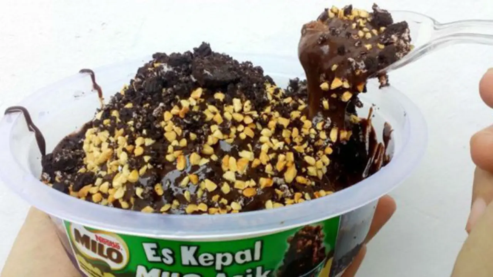

Es Kepal Milo adalah minuman yang terbuat dari susu kental manis, milo, dan es batu. Minuman ini sangat cocok diminum saat cuaca panas.
Ingredients
- Bubuk Milo
- Susu Kental Manis Cokelat
- Es Batu
- Topping
Langkah-Langkah:
-
Siapkan bahan-bahan yang diperlukan.
-
Masukkan es batu serut ke dalam gelas.
-
Tuangkan susu kental manis cokelat ke dalam gelas.
-
Tuangkan bubuk milo ke dalam gelas.
-
Tambahkan topping sesuai selera